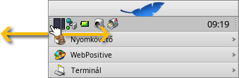
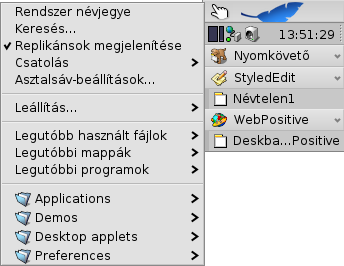
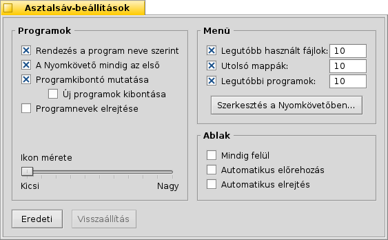
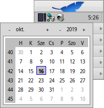
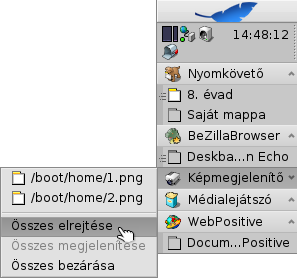

| Index |
|
Asztalsáv menü A Polc Futó programok listája |
Asztalsáv (Deskbar)
Az Asztalsáv egy kis panel, ami alap esetben a jobb felső sarokban helyezkedik el. Ez a Haiku megfelelője a Windows Tálcájának. 3 része van: a menü, ahol a programok és beállítások találhatóak, a polc, az órával és a többi eszközzel, és a futó programok listája.

You can move the Deskbar to any corner or as a bar along the upper or lower border of the screen by gripping the knobbly area on one side of the tray (see arrows above) and drag & drop it into the new position.
You can also fold it into a more compact layout by drag & dropping the knobbly area onto Deskbar's Leaf menu. Being only the height of a regular window tab, even windows that take up the whole screen won't obscure the Deskbar tray with its clock and icons.
By gripping the other knobbly widget of the tray, you can change the width of the Deskbar by dragging the mouse left or right:
A wider Deskbar allows for more icons in the tray on a single row. It also truncates longer application names in the list of running programs less often, especially if you use larger icons.
 Asztalsáv menü
Asztalsáv menü
A menü megnyílik, ha az Asztalsávon a logóra kattintunk:
Haiku névjegye... - Alapvető rendszer és jogi információk.
Keresés... - A Kereső panel megnyitása.
Replikánsok megjelenítése - A kis Replikáns jelek megjelenítése/elrejtése, aminek segítségével mozgatható, eltávolítható egy replikáns.
Csatolás - Ez az opció megegyezik az Asztal helyi menüjével (további információk a Lemezek csatolása fejezetben).
Asztalsáv-beállítások... - Az Asztalsáv beállításai (információk lejjebb).
Leállítás - A rendszer a vagy a.
Legutóbbi dokumentumok, mappák, programok - A legutóbb megnyitott dokumentumok, mappák illetve programok listája (bővebben az részben alább).
Programok, Bemutatók, Asztali kisalkalmazások, Beállítások - Az elérhető programok, bemutatók és beállítások listája.
További bejegyzéseket hozhatsz létre bármilyen elemhez (programhoz, mappához, fájlhoz, kereséshez, stb.), amihez hivatkozást készítesz a ~/config/settings/deskbar/menu mappába.
Asztalsáv beállításai

Az Asztalsáv beállításai három részből állnak.
Programok
Az alábbi beállítások nincsenek hatással a programokra, csupán a futó programok listájának megjelenését módosíthatjuk vele.
| A futó programok listájának ABC sorrend szerinti rendezése. | ||
| A Nyomkövető mindig az első a futó programok listájában a sorbarendezéstől függetlenül. | ||
| Egy kis kapcsoló megjelenítése a program neve mellett, amivel megjeleníthetjük/elrejthetjük a programhoz tartozó ablakok listáját a program neve alatt. | ||
| Az újonnan indított programok ablak-listájának automatikus megjelenítése. | ||
| A futó programok listájában a programok neveinek elrejtése. | ||
| A futó programok listájában a programikonok mérete. |
Menü
While the first couple of menu items of the Deskbar are fixed, you can customized the ones below .
Here you can set the number of recent documents, folders and applications that are shown in their menu in the Deskbar, or if you want to see them at all.
The button opens the folder ~/config/settings/deskbar/menu/. In it you'll find the files and folders that appear in the Deskbar, by default these are , , , and .
You can delete or add entries like links to applications, documents or even queries by simply copying/deleting them to/from this folder.
Programs installed from a package automatically put an entry into the Deskbar. Depending on the number of packages you have installed, this can become a bit crowded. If you prefer to have total control, and only want to see applications you link there yourself (possibly in categorizing sub-folders), here's how to do it:
You create a link of the menu folder in ~/config/settings/deskbar/ and rename to menu_entries. From Terminal that is achieved with:
ln -s ~/config/settings/deskbar/menu ~/config/settings/deskbar/menu_entries
Ablak
Ezek az opciók magára az Asztalsáv-ablakra vonatkoznak.
| Az Asztalsáv mindig a többi ablak előtt van. | ||
| The Deskbar pops to the front when the mouse pointer touches where the Deskbar meets the screen edge, and is lowered when it leaves the Deskbar area. | ||
| Az Asztalsáv mérete lecsökken mindössze néhány képpontra, majd előjön ha az egér fölé kerül. |
A Polc

Többek között a Polc egy órát is tartalmaz. Az egeret az óra felett tartava megjelenik az aktuális dátum. A bal egérgombbal megjelenik egy naptár is. Jobb gombbal pedig az óra megjeleníthető/elrejthető, illetve beállíthatjuk az Időt.
Bármelyik program elhelyezhető a polcon ikon formájában. A levelező rendszer másik ikont jelenít meg ha új levél érkezik, és egy menüvel is rendelkezik, ahonan például új levelet készíthetünk. A Folyamatkezelő egy másik példa, hogy miként jeleníthetünk meg információkat a polcon (processzor/memória használat) és hogy hogyan lehet még menüt hozzáadni.
Futó programok listája

You can change to a specific running application by clicking on its entry in the Deskbar and choosing (one of) its windows from the submenu. By right-clicking you can windows or and with them the entire application.
A SHIFT CTRL click on an application hides all its windows, a CTRL click shows them again.
When using the "expander" setting to show all windows of an application, you can middle-click on a window or app to start a new instance. For example, middle-clicking a running StyledEdit will open a new document window.
Maybe more useful: while holding SHIFT, a middle-click on a window closes it. Handy when you'd like to close some of many open Tracker windows, for example.
Ha engedélyeztük a programkiterjesztőt, akkor azzal megjeleníthetjük illetve elrejthetjük a programhoz tartozó ablakok listáját közvetlenül a program alatt.
Az ablakok melletti ikonok információt adnak az ablak állapotáról. A fehér ikon jelzi, hogy az ablak látható, a szürke ikon pedig azt, hogy el van rejtve. A három vonal az ikon előtt arról informál minket, hogy az ablak nem a jelenlegi munkaasztalon található.